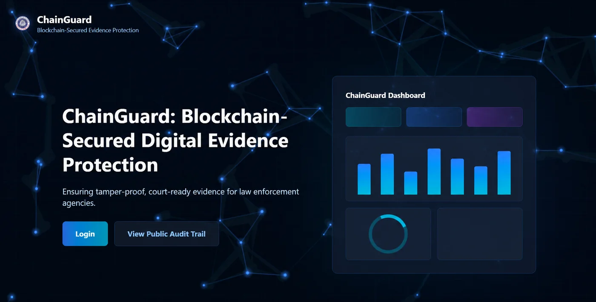

Welcome to my QA portfolio
Steven Benedict T. Bernabe
Final-year BS Information Technology student looking for a Quality Assurance internship. I write test cases, test features by hand, report bugs, and check that fixes work.
- Studying
- BS Information Technology, Bukidnon State University
- Expected graduation
- 2027 (SY 2026–2027)
- Academic standing
- Consistent Dean’s Lister
- Focus
- Quality Assurance
Featured Projects & QA Deliverables
ChainGuard, my capstone project
A blockchain-based system for tamper-evidence and integrity verification of digital evidence. The project is completed. I was the Quality Assurance member and assistant leader, and I researched and proposed the tools and integrations used to build it.

What I did
- Reviewed system requirements and functionality to write test scenarios and test cases.
- Tested features manually and compared expected results with actual results.
- Reported defects, then retested after fixes to confirm they were resolved.
- Checked database records to verify data integrity.
Documents I wrote
Tools I used
- Postman
- SQL and database tools
- Excel and Google Sheets
- GitHub and Git
Interactive Web Developer Portfolio & Showcase
A responsive, accessible personal web development and QA portfolio website engineered from scratch with semantic HTML5, CSS Grid/Flexbox, dynamic theme toggling (Violet & Pink modes with localStorage persistence), live GitHub API integration, and interactive modal dialogs for inspecting QA deliverables.
Key Features Built
- Custom interactive modal viewer with tabbed QA test artifact displays.
- Theme-switching engine with persistent localStorage user preference.
- Dynamic GitHub REST API integration to fetch live repositories.
- Interactive contact form with real-time validation and submission alerts.
- Fully mobile-responsive layout built with Flexbox & CSS Grid.
IT Asset & Helpdesk Tracking Portal (Mock Prototype)
A conceptual web portal designed for educational IT infrastructure to track hardware inventory, monitor maintenance schedules, and triage technical support requests with simulated SQL database integrity checks and test documentation.
Core Capabilities
- Hardware inventory registration and status monitoring (Active, Repair, Retired).
- Helpdesk ticket submission and triage workflow.
- Designed test cases covering user permissions and data integrity checks.
Technologies & Skills
- HTML5 / CSS3
- JavaScript
- PHP & MySQL (Concept)
- Test Case Design
- UI/UX Wireframing
Open Source Repositories (Live from GitHub API)
Repositories fetched dynamically from @steveuniverseuwu via the GitHub REST API:
Skills
Quality assurance
- Manual testing
- Test case and scenario design
- Test planning
- Defect reporting
- Retesting
- Requirements review
- Data integrity checking
Data and design
- Data analytics
- Graphic design
- UI/UX design
Web development (working knowledge)
- HTML
- CSS
- JavaScript
- PHP
- Laravel
- MySQL
- PostgreSQL
I build these web skills through coursework, research, and AI-assisted learning, always verifying the underlying logic through hands-on debugging and manual testing.
Background
Bukidnon State University
Expected 2027Bachelor of Science in Information Technology. Consistent Dean’s Lister since 1st Year, 2nd Semester. Relevant coursework includes Quality Consciousness, Habits and Processes, and Business Analytics.
Ultimate PC, Malaybalay City
Work immersion, SY 2022–2023Applied the PC hardware skills I learned in the ICT strand in a real workplace, and practiced professional customer handling.
Bukidnon National High School
Graduated 2023Senior High School, ICT strand (TVL track). Graduated with high honors.
Recognition and learning
Winner, DIGIMC Quiz Bee 2026
Team win in a technology and IT quiz bee at Malaybalay City New City Hall.
Certificates
- Introduction to AI Literacy and Responsible UseMicro-credential (PQF Level 6) under CHED’s ACHIEVE program, provided by Mapúa University with Arizona State University. Issued 14 September 2026.View certificate
- CCNA: Switching, Routing, and Wireless EssentialsCisco Networking Academy, through Bukidnon State University. Completed 23 December 2025.View certificate
- CCNA: Introduction to NetworksCisco Networking Academy, through Bukidnon State University. Completed 16 May 2025.View certificate
Pattern recognition & analysis
Outside coursework, I study multi-timeframe chart structure on demo market feeds. This self-study reinforces disciplined rule-following, patience, and visual pattern recognition—habits that carry directly into finding subtle software defects and edge cases.
Contact
Let's Connect & Collaborate
Seeking a 490-hour On-the-Job Training (OJT) role in Quality Assurance and Web Development starting February 2027. Send a direct message using the form or connect through my verified profiles.
Send a Direct Message
Recruiters, engineering leads, or peers: send a note and expect a swift reply.